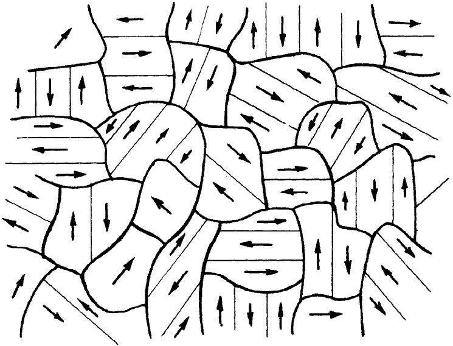

从上面的理论分析我们就已断定，在某一定温度之下铁磁性材料应当自发地磁化，以致所有磁性都指向同一方向。可是我们知道，这对于一块普通的、尚未经磁化 的铁来说是不正确的。为什么并不是所有的铁都被磁化了呢？我们可以借助于图37-4来解释。假定铁全部是一大块如图37-4（a）所示形状的单晶，并都已在一个方向上自发地磁化了，那么就有相当强的外部磁场，即具有大量能量。我们能够减少这种场的能量，只要布置得使铁块一边被“向上”磁化，而另一边则被“向下”磁化，如图37-4（b）所示。当然，这时铁外的场就会伸展至较小体积，因而使那里有较少能量。
图37-4 铁的一块单晶中磁畴的形成［转载自Kittel C. Introduction to Solid State Physics ，2nd ed.，1956］
啊，等一等！在两个区域的边界层内，自旋向上的电子紧靠着自旋向下的电子。但铁磁性只在这样的材料中才会表现出来，即其中电子自旋若互相平行 而非互相反向，则能量会削减 。因此，我们在沿图37-4（b）的那条虚线上就已加进了一些额外能量，这种能量有时称为壁能 。一个仅有单一磁化方向的区域叫做磁畴 。在两磁畴间的界面——“壁”——处，在对边上的原子按不同方向旋转着，因而具有单位面积的壁能。我们已把它描写成好像是有两个相邻原子，以恰恰相反的方向自旋，但事实证明，大自然会把事情调整得使转变较为平缓。然而这里我们无需为这样的细节操心。
现在的问题是：在什么时候造成一个壁较好或较差？答案是，这取决于那些磁畴的大小 。假设把一铁块按比例增大，以致整个事物增大一倍，则在体外充满给定磁场强度的空间就会是八 倍大，从而正比于体积的磁场能量也会是八倍大。可是在提供壁能的两磁畴间的界面 面积，却只有四 倍大。因此，如果铁块足够大，则把它分裂成多个磁畴将是合算的。这就是为什么只有那些十分微小的晶体才能拥有单个磁畴的缘故。任何大的——尺度大于百分之一毫米的——物体将至少有一个磁畴壁；而任何普通“厘米大小”的物体则将分裂成如图所示的许许多多个磁畴。分裂成磁畴的这种过程将继续下去，一直到再插进一个附加壁所需的能量与晶体外面磁场降低的能量同样大时为止 。
实际上大自然还发现了另一种降低能量的途径。完全不需要有磁场跑出外面，只要有一小块三角形区域被斜着 磁化就行，如图37-4（d）所示 [2] 。因此按图37-4（d）的那种排列，我们知道体外不会 存在磁场，只不过增加了一点点畴壁而已。
然而，那又会引起一种新问题。事实证明，当铁的单晶体被磁化时，在磁化方向改变了长度。因而一个“理想”立方体当其磁化强度比如是“向上”时，就不再是一完美的立方体了。其“竖向”尺寸将不同于“水平”尺寸。这一种效应叫做磁致伸缩 。由于这种几何形态上的变化，因此图37-4（d）中的小三角块，比如说，不再与那些适用的空间“相配”了——该晶体在一个方向已变得太长，而在另一个方向则太短了。当然，实际上还是相配 的，只不过是硬挤进去罢了，而这就会牵涉到某些机械应力。因此，这种排列也 引进了一种附加能量。正是所有这些不同能量的互相平衡，才决定在一块未经磁化的铁中磁畴最后如何把它们自己排列成那种复杂的形式。
现在，当加上一个外加磁场时会发生什么情况呢？为了简单起见，试考虑磁畴如图37-4（d）所示的晶体。如果我们加上一个方向向上的外磁场，则该晶体将以什么方式进行磁化呢？首先，中间的畴壁可以向侧向 （向右）移动 而减少能量。之所以这样移动，其目的在于使“向上”区域变成大于“向下”区域。有更多的基本磁体与场整齐排列，而这就提供了一个较低的能量。因此，一块铁在弱场中——即在磁化过程中的最初阶段——那些畴壁会开始移动并侵蚀与场反向的磁化区域。当场继续增强时，整块晶体便逐渐转变成一个单独大畴，那是外场帮助维持整齐地排列成的。在强场中晶体“喜欢”全都排列成一个方向，只是因为 在外磁场中它的能量会被降低——这时有关系的就不再仅仅是晶体本身的外场。
图37-5 一个与晶轴成一角度的磁化场H将逐渐改变磁化强度的方向，而不会改变其大小
如果几何形态不那么简单又会怎么样呢？若晶体的轴与其自发磁化处于同一方向，但我们所加磁场却在其他某个方向 ——比如说在45°上——那又会怎样呢？我们也许认为，各磁畴会改造自己使得其磁化强度与外场平行，然后和以前一样，它们就能够全部生长成一个畴了。但这对于铁来说是不容易办到的，因为磁化晶体所需的能量依赖于相对于晶轴的磁化方向 。要把铁在平行于其晶轴的方向上磁化是相对容易的，但要在其他某个方向——比如相对于其中一轴成45°角的方向——把它磁化就需要较多 能量。因此，如果我们就在这样一个方向加一磁场，则首先发生的是，那些指向接近 于外加磁场方向的从优方向之一的磁畴将会长大，直到磁化全都沿着这些方向中的一个为止。因此，如果加上更强大的场 ，则磁化强度就逐渐被扭转至与场平行的方向，如图37-5所粗略表示的那样。
图37-6画出了铁单晶磁化曲线的一些观测结果。为了便于理解它们，我们首先必须对描述晶体中有关方向的符号做一些解释。一块晶体可以用多种不同方式把它切开，以便产生原子水平的表面。任何曾驱车经过果园或葡萄园的人们都会知道这么一件事——对之观望令人神往。如果你朝一个方向望去，会见到一行行的树——若朝另一方向看，又会见到另外一行行的树，如此等等。同样地，一块晶体也有一些确定的平面族，其中每个平面都包含了许多原子，而这些平面都具有这么一个重要特点（为较易于理解起见只考虑立方晶体），即如果观察这些面与那三条坐标轴相交于什么地方——则我们发现这些交点与原点间距离的倒数 会形成一些简单的整数比。这三个整数就被取作为该组平面的定义。例如图37-7（a）中我们把一个平行于yz面的平面描绘出来了，这叫作［100］晶面，它与y轴和z轴的交点的倒数都是零。对于（立方晶体中的）这种面的垂直方向也给予相同一组数目。在立方晶体中要理解这个意思是容易的，因为此时［100］这些指数意味着一个矢量，它在x方向具有单位分量，而在y和z方向则都没有任何分量。［110］这一方向是同x轴和y轴均成45°角的那一个方向，如图37-7（b）所示；而［111］的方向则是沿立方体对角线的方向，如图37-7（c）所示。
图37-6 对H的不同方向（相对于晶轴而言），与H平行的M分量［转载自Bitter F. Introduction to Ferromagnetism ，McGraw-Hill Book Co.，Inc.，1937］
图37-7 标明各晶面的方法
现在回到图37-6，我们看到了铁的单晶在各个方向上的磁化曲线。首先应当注意，对于十分微小的场——弱至在标度上极难见到它——磁化强度非常迅速地达到了一个十分大的值，如果这个场处在［100］方向——即是沿那些敏锐而容易磁化的方向之一——则该曲线会上升至一个高值，稍微弯曲一点，然后就饱和了。所发生的情况是，那些已经在那里的磁畴非常易于移动。只要有一小场，就引起畴壁移动而吃掉所有那些“方向错误”的磁畴。单晶铁与普通的多晶铁相比，其导磁本领要大得多。一块理想晶体非常易于磁化。但为什么它的磁化曲线竟被弯曲了呢？为什么它不会立刻就达到饱和呢？我们不十分肯定。你或许有一天会学习到这些东西。但我们的确懂得，在高场时该曲线很平坦。当整块都已是一个单独的磁畴时，为什么附加磁场就不能造成任何更多的磁化——它已经处在M饱和 的状态，其中所有电子都已经排列整齐了。
现在，若试图在［110］方向上——那是与晶轴成45°角的——做同样的事情，那会发生什么呢？我们试开动一个小小的场，而当那些磁畴长大时磁化就跳跃上去。然后，当把场再增大一点时，我们便发现需要有一个相当大的场才能达到饱和，因为此刻磁化已偏离 了那个“容易”的方向。如果这一解释正确，则［110］曲线外推回至纵轴上的交点应为饱和值的 。事实上，结果证明这的确非常非常接近于 。同理，在［111］方向上——那是沿立方体的对角线——我们发现，正如期待的那样，曲线会外推回至接近饱和值的 。
图37-8显示有关其他两种材料（镍和钴）的对应情况。镍与铁不同。在镍中，事实证明［111］方向才是易磁化方向。钴具有六角晶形，而人们对于这一种情况就曾拙劣地修补了一套名称。他们希望取六角柱的底面上的三个坐标轴和另一个垂直于底面的坐标轴，因此一共用了四个指数。［0001］的方向指沿六角轴的方向，而［1010］的方向则是垂直于这一条轴的。我们看到不同金属的晶体其行为用不同的方法来表示。
图37-8 铁、镍和钴单晶的磁化曲线［转载自Kittel C. Introduction to Solid State Physics ，2nd ed.，1956］
现在我们应该讨论多晶材料，诸如一块通常铁。在这种材料中有许许多多小晶体，它们的晶轴指向各个方向。这些是与磁畴不同 的。应该记住，几个磁畴可能属于同一单晶 ，但在一块铁中就有许多其轴取不同方向的不同的晶体 ，如图37-9所示。在这些晶体的每一个中，一般也会有几个磁畴。当对一块多晶材料加上一个小 磁场时，所发生的情况是：畴壁开始移动，而那些具有易磁化的有利方向的畴会长得较大。这一种成长过程是可逆的，只要场保持很小——若我们把场除去，磁化强度就会回到零。磁化曲线的这一部分在图37-10中标明为a。
|  | |
| 图37-9 未被磁化的铁磁材料的微观结构。每一晶粒具有一个易磁化方向，并分裂成一些平行于这一方向的自发磁化的磁畴 | 图37-10 多晶铁的磁化曲线 |
对于较大的场——在所示的磁化曲线的b区中——情况复杂得多。在材料的每个小晶体中，会有应变和位错存在，同时也会有杂质、尘埃和不完整性。而除了最小的场之外的一切场，当畴壁移动时就会被这些东西所阻挡住。在畴壁与位错之间、与晶粒间界之间或与杂质原子之间，都会有一种相互作用能。因而当畴壁到达其中之一时，它就受到阻挡。它在某个磁场时被阻塞在那里。但若此时将场增大一些，则畴壁会突然迅速地移动过去。因此畴壁的运动并不像理想晶体中那样顺利——它不时被拖住，然后又做跳跃式的运动。要是我们在微观范围内来注视这一磁化过程，则会见到像图37-10中那个插入圆圈内的某些情况。
现在重要的事情在于，这些在磁化过程中的跳动会引起能量损失。首先，当磁畴边界最后滑过一个障碍物时，它会很快地移到次一个障碍物上去，因为场已超过对无障碍运动所需的了。迅速运动意味着有迅速变化的磁场，这会在晶体中产生涡电流。这些电流在加热金属的过程中丧失了能量。第二种效应则是，当磁畴突然变化时，晶体的一部分由于磁致伸缩而改变了它的大小。畴壁的每一突然移动都会产生一个带走能量的小声波。由于这些效应，磁化曲线的第二部分就是不可逆 的，并有能量损失 。这便是磁滞效应的来源，因为要把边界壁向前移动——迅速地移动——然后又向后移动——又迅速地移动——会产生不同的结果。它像一种“颠簸”的摩擦力，因而带走了能量。
最后，对于足够高的场，当我们已把所有畴壁都移动并将每一晶体都在其最佳的方向上磁化了时，仍然会有某些小晶体的易磁化方向不在我们所加的外磁场方向上。这时要将那些磁矩转动就需要很强的额外磁场。因此对于强场来说，磁化曲线会缓慢而平稳地增加——即在图上标明为c的区域。磁化强度并不会急剧达到它的饱和值，因为在该曲线的最后部分原子磁体正在一个强场中进行转动 。因此，我们就见到为什么通常的多晶材料的磁化曲线，如图37-10中所示的那样，会在开头升高一点点并且是可逆 的，然后就不可逆地升高，最后才再慢慢地弯过去。当然，在这三个区域之间并没有明显的转折点——它们会平滑地互相融合。
不难证明那磁化曲线中部的磁化过程是跳跃式的——畴壁在移动时跳跃和突然停止。你只需要将一个——绕上了许多千匝的——线圈接至放大器及扬声器上，如图37-11所示。如果你把几张硅钢片（如在变压器中所用的那一种）放置在该线圈中心并将一条形磁铁慢慢地移近该叠硅钢片，那么磁化的突然改变就会在线圈中产生一些脉冲电动势，它会在扬声器中产生听得到的清楚的嘀嗒声。当你把磁铁移得更靠近铁片时，你将听到一大串的嘀嗒声，有点像把一罐沙子倒转时沙粒竞相落下来的那种嘈杂声。当场增强时，畴壁就在跳跃、突然停止和摇动。这一现象叫作巴克豪森效应 。
图37-11 钢片里磁化的突然变化在扬声器中发出嘀嗒响声
当你把磁铁再移近铁片时，有一段时间这噪声变得越来越响亮，但之后当磁铁十分靠近铁片时噪声又相对小了。为什么呢？因为几乎所有畴壁都已被移至尽可能远了。所以任何更大的场都只是在转动 每个磁畴中的磁化强度，那是一种平稳的过程。
如果你现在将磁铁移开，以便使它沿磁滞回线的那条下降支路返回来，那么各磁畴便全都企图再回到低能量上去，而你就会听到另一大串反向跳跃的声音。你也可注意到，若把磁铁带到某一指定地点而在那里稍微来回移动，便将只有相对少的噪声，再又像是把一罐沙倾倒——但一旦那些沙粒已经站稳了位置，罐的细小运动便将不会对它造成扰动。在铁中磁场小的变化不足以移动任何边界越过任何“驼峰”（即克服阻挡）。